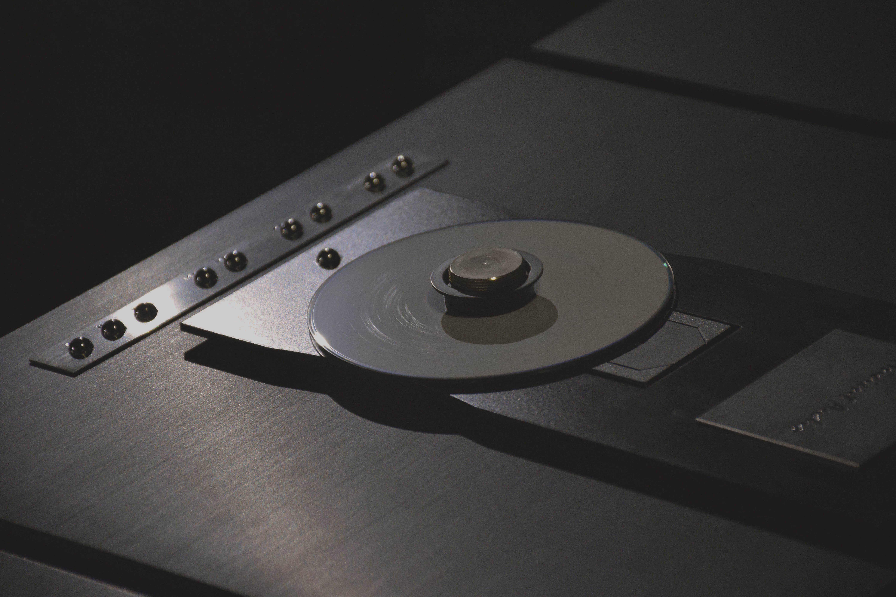

Lektor Grand
Ever since the Lektor Grand hit the market its stately looks and outstanding sonics made it rank among the very exceptional few on irrespective of the price tag. Wherever auditioned, in London, Oslo, US its shear beauty of music rose the eyebrows of disbelief for such uncommon musical presentation. As Andrew Harrison stated in his Hi- Fi News: “…thanks to its sweet, liquid and organic presentation there are few machines that will take you closer to the heart of the music.” The passing time and new technological achievements have made it realize that what could have been best yesterday is no longer good enough today.

Ancient Audio have eventually decided to launch an entirely new project but maintain, at the same time, a link with the past by retaining the proper name of the top of the line of Ancient Audio CD players in line with the concept of an open-up top loader and a three piece design. All the rest have been substantially refurbished. Firstly, the mechanical concept of the casing has been redesigned to make the CD mechanism even more impervious to any outside interference due to its sandwich construction with a layer of proprietary vibration absorbent in between two slabs of granite. Secondly, the CD transport is provided with three separate power transformers for CD drive, digital electronics and the front panel display respectively. Thirdly, a new proprietary Silver DAC III and an isolation of the master clock constitute a new attitude to designing transport mechanisms. On top of it all, there is a battery of V-cap Teflon film capacitors to bring out sound liquidity, transparency and inner detail in an unprecedented manner.
What you are presented with as a final product is not only a more refined appearance but the PLAYER capable of linking the powerful with the intimate, transparency with unparalleled high resolution, depth and width of the musical presentation with multi–layered and three dimensional scene, liquidity and inner detail with a wide palette of harmonics.
* * * * Lektor Grand SE was honoured by Best Product 2008 - The Main Award by High Fidelity * * * *
Full review on HighFidelity
Dimensions... ( W x H x D ):